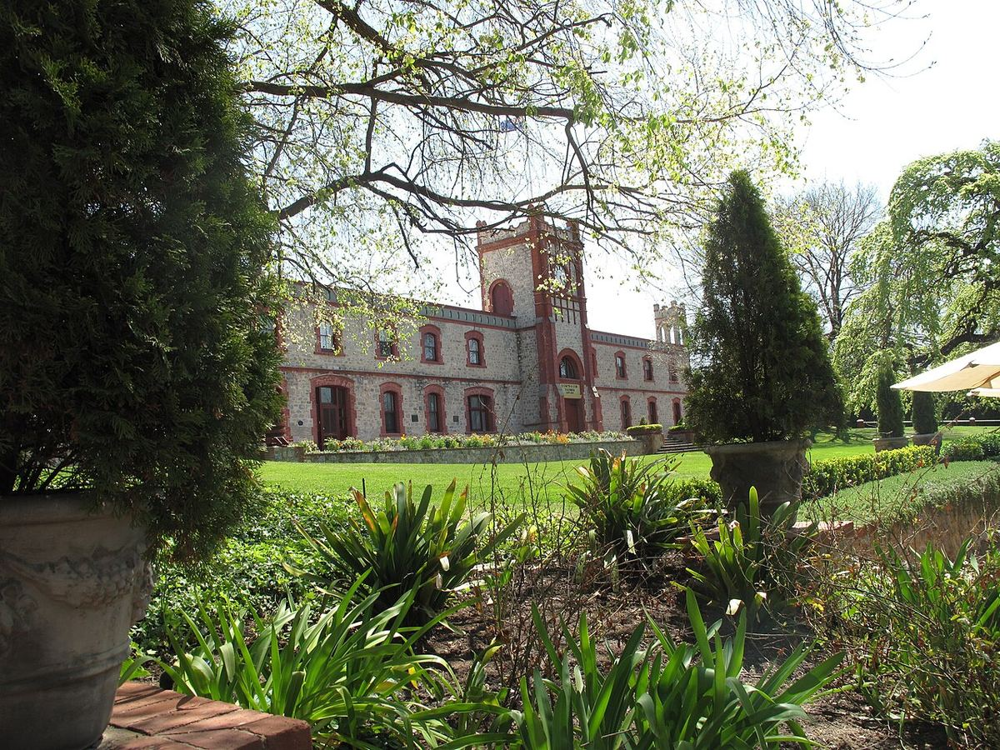

BLANCO
Bodega fundada en 1849 en Angaston por Samuel Smith y todavía en manos de sus descendientes. Es una de las casas familiares más antiguas de Australia y pionera del Viognier en el país.

Yalumba fue fundada en 1849 por Samuel Smith, un cervecero inglés que había emigrado a Australia Meridional y compró tierras cerca de Angaston, en el extremo oriental del valle del Barossa. El nombre procede de una lengua aborigen y suele traducirse como «toda la tierra alrededor». La empresa ha permanecido en manos de la familia fundadora, hoy con el apellido Hill-Smith, y se considera una de las bodegas familiares más antiguas del país. La bodega de piedra, con su torre del reloj, es uno de los edificios más reconocibles del Barossa.
Yalumba se distingue por algunas actividades poco habituales en una bodega: mantiene su propia tonelería, donde se fabrican barricas a partir de duelas secadas al aire, y un vivero de viñas que suministra plantas a viticultores de todo el país. En los años ochenta fue una de las primeras empresas en plantar Viognier en Australia, en el valle de Eden, y ha contribuido de forma decisiva a la difusión de esta variedad.
La gama es muy amplia y abarca desde vinos de gran volumen hasta tintos de viñas viejas del Barossa. Entre los más conocidos figura The Signature, una mezcla de Cabernet Sauvignon y Shiraz que cada añada se dedica a una persona vinculada a la empresa. Yalumba elabora también vinos de Coonawarra y de otras regiones, así como espumosos y vinos generosos.
Yalumba tiene sala de catas en su bodega histórica de Angaston, en el Barossa.